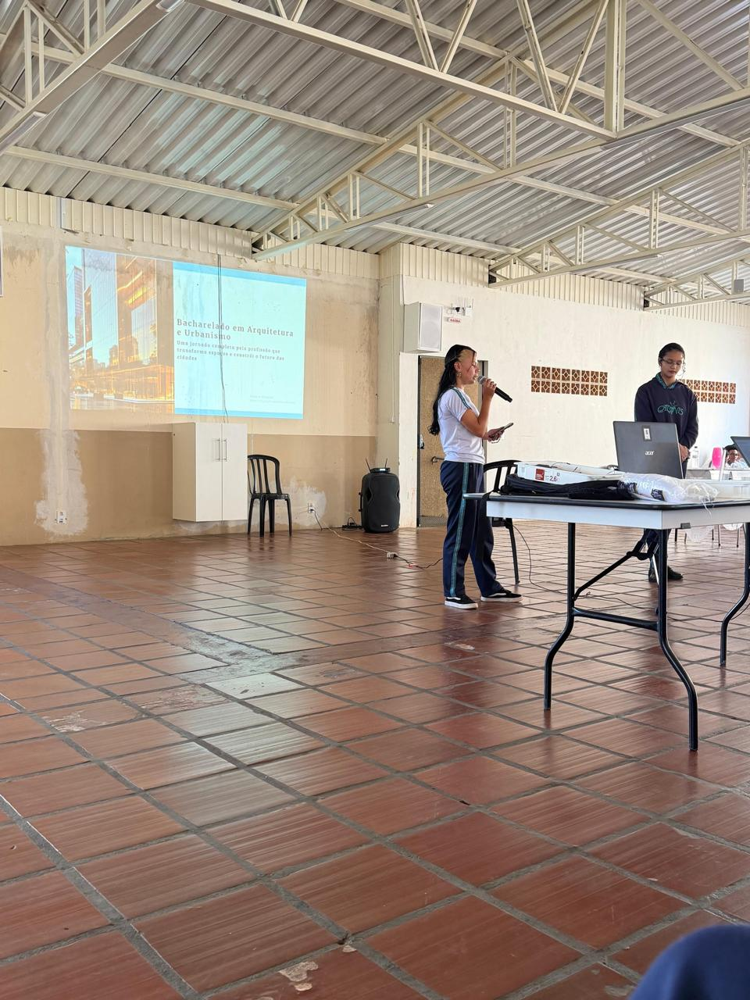
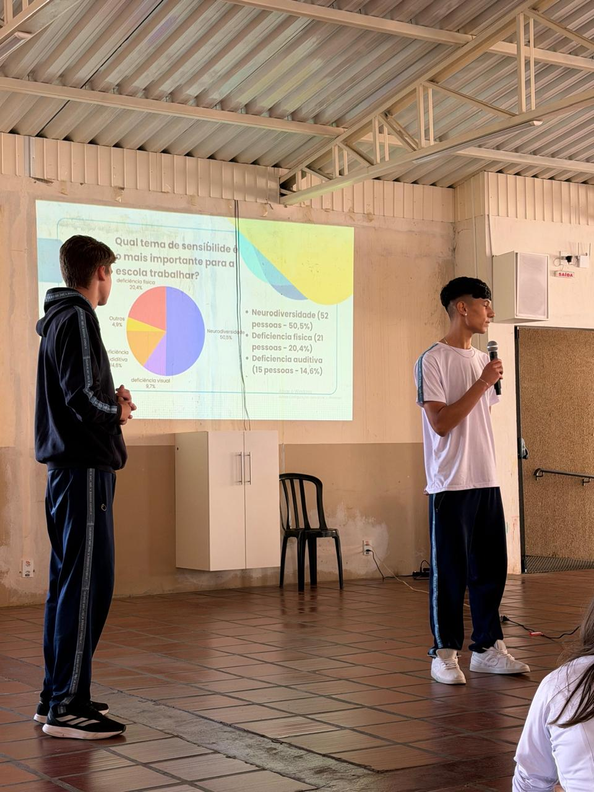
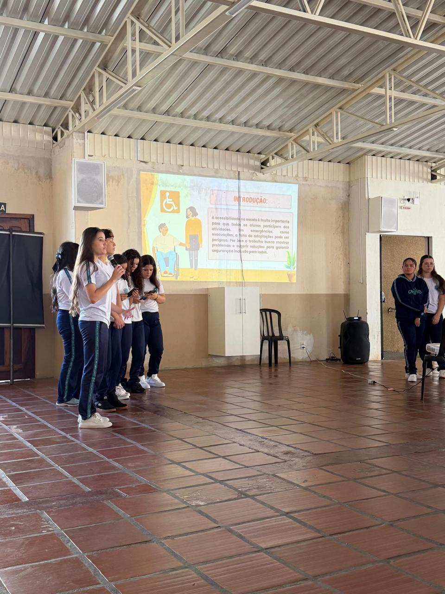

Colégio Cavanis - Castro

O primeiro grupo, formado por duas alunas do 2º Ano C, apresentou sobre o bacharelado em Arquitetura e Urbanismo. Durante a apresentação, elas explicaram sobre a profissão, as áreas de atuação, os projetos desenvolvidos dentro da arquitetura e a importância dessa área para a sociedade.
Além disso, elas abordaram temas relacionados à acessibilidade, mostrando como a arquitetura pode ajudar na inclusão das pessoas dentro de espaços públicos e privados.
O grupo também comentou sobre a aplicação prática da acessibilidade, destacando adaptações importantes para garantir segurança e conforto para todos.
Outro tema apresentado foi a arquitetura sustentável, mostrando soluções ecológicas e ideias que ajudam na preservação do meio ambiente através das construções.

O segundo grupo apresentou uma pesquisa feita com os alunos do Colégio Cavanis sobre acessibilidade dentro da escola.
Durante a apresentação, eles mostraram gráficos e resultados relacionados às respostas dos estudantes, destacando quais eram os principais problemas e dificuldades encontrados no ambiente escolar.
A pesquisa ajudou a mostrar a importância da inclusão e da adaptação dos espaços escolares para atender melhor todos os alunos.

O terceiro grupo apresentou exemplos práticos sobre acessibilidade dentro da escola, mostrando soluções que poderiam melhorar a segurança e a inclusão no ambiente escolar.
Entre os exemplos apresentados, eles explicaram sobre portas automáticas que poderiam ser acionadas em situações de emergência, como incêndios. O sistema funcionaria detectando temperaturas elevadas e abrindo automaticamente as portas para facilitar a evacuação.
O grupo também comentou sobre outros problemas encontrados na escola, como escadas inadequadas e pisos muito lisos, que podem causar acidentes e dificuldades de locomoção.
Além disso, outros integrantes apresentaram o orçamento das melhorias, mostrando valores e ideias para tornar a escola mais acessível e segura para todos.